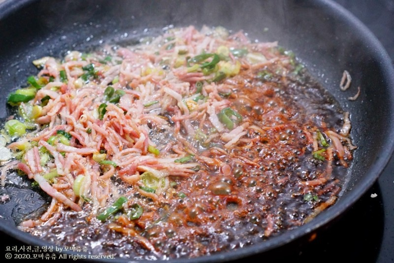
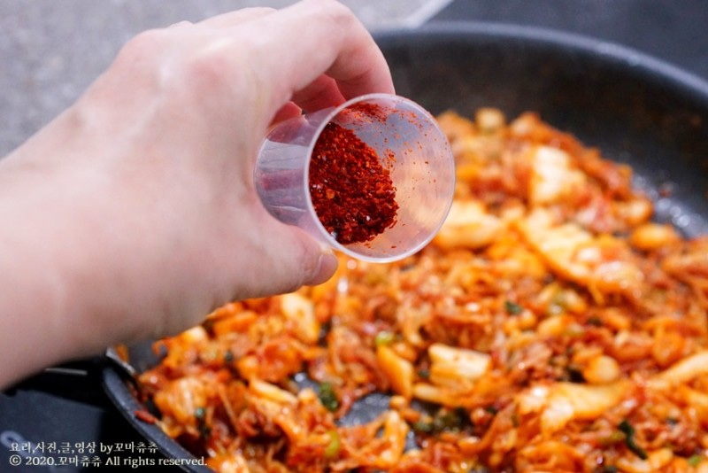
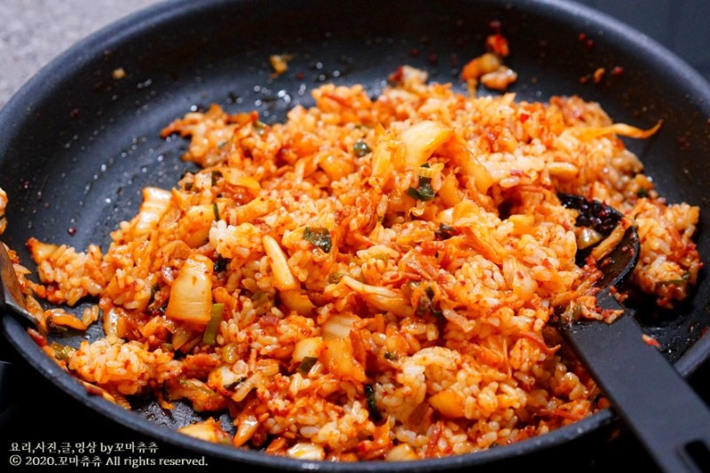
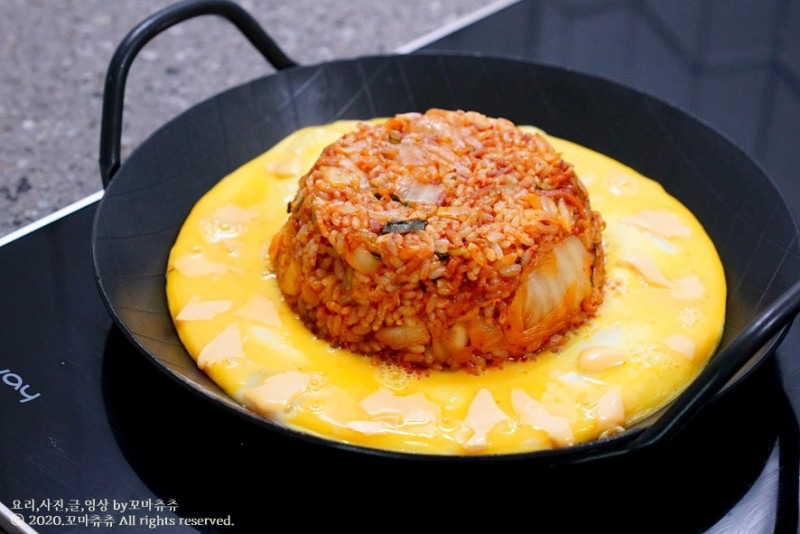

Korea Food
재료 리스트
김치 1/2 공기 | 대파 조금 | 고춧가루 | 달걀 | 참기름 | 베이컨 5줄 | 밥 1공기
레시피
1. 달궈진 팬에 썰어 놓은 파를 넣어 갈색빛이 돌때 까지 볶아준 뒤 베이컨과 함께 볶아주세요.

2. 먹기 좋은 크기로 잘라 놓은 김치를 넣어 함께 볶아 주세요.
김치를 볶아줄 때 고춧가루 1스푼 정도를 넣어주면 더 진한 색이 나옵니다.

3. 볶아진 김치에 밥과 참기름을 넣고 볶아준 다음 밥공기에 꾹꾹 눌러담아 모양을 잡아주세요.

4. 준비된 팬에 모양을 잡아 놓은 볶음밥을 올린 뒤 밥 주위에 달걀물을 뿌려 달걀을 익혀주세요.

김치 볶음밥 완성 !!